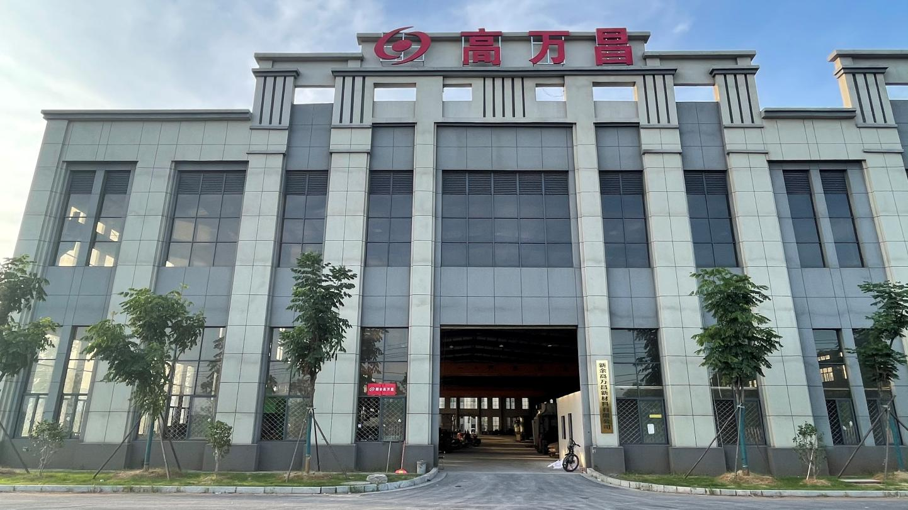
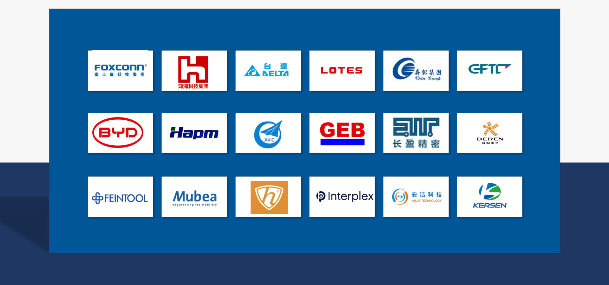

网站现已重点覆盖 S45C、42CrMo4、65Mn、20CrMnTiH、AL6061、AL5052、SUS301、SUS304、B20AT、50W290 与 C52100 等常用型号，方便客户按牌号、用途和加工方式快速筛选。
S35C、S45C、SK85、42CrMo4、16MnCr5、20CrMnTiH，适合齿轮、弹簧、轴类和高强度结构件。
AL6061、AL7075、AL5052、SUS301、SUS304、SUS316，常用于电池壳体、散热件、连接件与精密冲压件。
B20AT、B35A250、50W290、C52100 等型号适用于电机铁芯、变压器铁芯、导电片与连接器零件。
支持分条、剪板、冷轧与退火，按厚度、宽度、公差、毛刺和包装要求安排交付。
KSC 可按特钢、矽钢片、铝材、不锈钢、铜材需求，协助确认库存、加工方式、包装和交付节奏。
更成熟的供应体系、更稳定的加工交付、更国际化的制造布局。
让采购、工程和生产团队更容易确认材料，减少反复沟通。
确认牌号、状态、厚度、宽度、表面、硬度、用途和年用量。
结合应用场景推荐材料替代、分条、剪板、冷轧或退火方案。
按客户尺寸、公差、毛刺、卷重、包装和标签要求安排生产。
中国、越南、泰国基地协同支持稳定交期和持续供货。

高顺昌控股有限公司（KSC）成立于2000年，总部位于香港，是一家专业从事特钢、矽钢片、铝材、不锈钢、铜材等金属材料贸易及加工服务的综合性企业。KSC在华南地区中高碳钢销量领先，深耕行业超过25年。
从原材料整合到加工设备配置，KSC 以更完整的产能链路，为客户提供更可靠的交付体验。
从香港到全球制造网络，逐步形成面向亚洲市场的稳定布局。
我们为众多世界知名企业提供产品与服务

先进设备，精准加工，产能充足
| # | 设备 Machine | 数量 Qty | 厚度 Thickness | 宽度 Width | 成品尺寸 Size |
|---|---|---|---|---|---|
| 1 | 宽幅分条机 Slitting-Wide | 7 | 0.15~10.0 mm | 150~1650 mm | W: 50~1650 mm |
| 2 | 窄幅分条机 Slitting-Narrow | 4 | 0.15~8.0 mm | 50~850 mm | W: 10~850 mm |
| 3 | 大剪板机 Shearing-Wide | 4 | 0.2~3.0 mm | 80~1350 mm | L: 200~3500 mm |
| 4 | 小飞剪机 Shearing-Narrow | 3 | 0.15~2.2 mm | 80~850 mm | L: 100~2500 mm |
| 5 | 六辊轧机 Cold-Rolling-Thin | 1 | 0.3~2.5 mm | 80~350 mm | W: 80~350 mm |
| 6 | 四辊轧机 Cold-Rolling-Thick | 2 | 2.5~13.0 mm | 150~550 mm | W: 150~550 mm |
| 7 | 退火炉 Annealing Furnace | 14 | 0.15~13.0 mm | 80~1500 mm | 20/30/40/50 MT |
覆盖中国、越南、泰国，加工产能领先
Dongguan / Shenzhen
Suzhou
Xinyu
Haiphong
Chon Buri